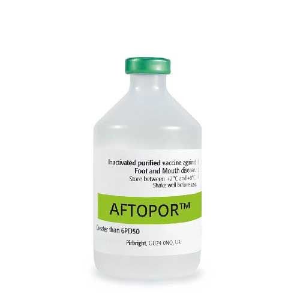

واکسن غیر فعال روغنی علیه بیماری تب برفکی در نشخوارکنندگان، بوهرینگر اینگلهایم فرانسه-انگلستان
📝مشخصات واکسن:
واکسن تب برفکی آفتوپور محصول کمپانی بوهرینگر اینگلهایم در سایت های فرانسه و انگلیستان تولید می گردد و از خاصیت آنتی ژنیسیته بالایی برخوردار است. این واکسن Highly Purified بوده و آنتی ژنهای آن نیز دو بار غیر فعال شده است. آفتوپور بر پایه روغن تولید می گردد.
📝ترکیب:
هر دز از واکسن آفتوپور حاوی سروتیپهای Asia.1 Shamir,A G VII 2015, A.Iran 05, O 3039, O Manisa می باشد و دارای بیشتر از 6PD50 قدرت محافظت کنندگی بوده که مزیت آن ایجاد ایمنی وسیع الطیف برای مدت زمان بیشتری علیه بیماری میباشد.
📝موارد مصرف:
واکسن آفتوپور برای پیشگیری از بیماری تب برفکی در نشخوارکنندگان (گاو و گوساله، گاومیش، گوسفند و بز) به کار میرود.
📝نحوه مصرف :
◽️در گاو و گوساله 2 میلی لیتر به روش عضلانی (بطور عمیق) تزریق گردد.
◽️در گوسفند و بز 1 میلی لیتر به روش عضلانی (بطور عمیق) تزریق گردد.
📝عوارض جانبی:
1- دامدار باید امکانات رفاهی لازم را در زمان واکسیناسیون نظیرشروع واکسیناسیون در صبح زود ویا عصردرزیر سایبان، وجود آب کافی در آبشخورها، نهایتاً رفع هر گونه استرس برای دام فراهم نماید.
2- ممکن است در ناحیه تزریق تورم موضعی کوچکی برای مدت کوتاهی ایجاد شود که برطرف خواهد شد.
3- در صورت بروز هر گونه علائم حساسیتی و شوک در دام، ضروریست دامپزشک واحد دامداری نسبت به تجویز داروهای ضد حساسیت و ضد شوک نظیر آدرنالین اقدام نماید.
4- در صورت تزریق تصادفی به دست و یا هر نقطه دیگر سریعاً به پزشک و یا مراکز درمانی مراجعه شود.
📝زمان پرهیز از مصرف:
ندارد.
📝شرایط نگهداری و حمل:
این محصول را در دمای 2 الی 8 درجه سانتی گراد، دور از نور نگهدای و حمل نمایید
📝بسته بندی:
واکسن آفتو پور در ویال های 100 میلی لیتری (50 دزی) به بازار عرضه می گردد.
📝توجه :
برای کسب اطلاعات بیشتر به بروشور واکسن مراجعه شود.
📝شرکت تولید کننده:
بوهرینگر اینگلهایم فرانسه-انگلستان
دانلود بروشور واکسن
دانلود کاتالوگ FMD